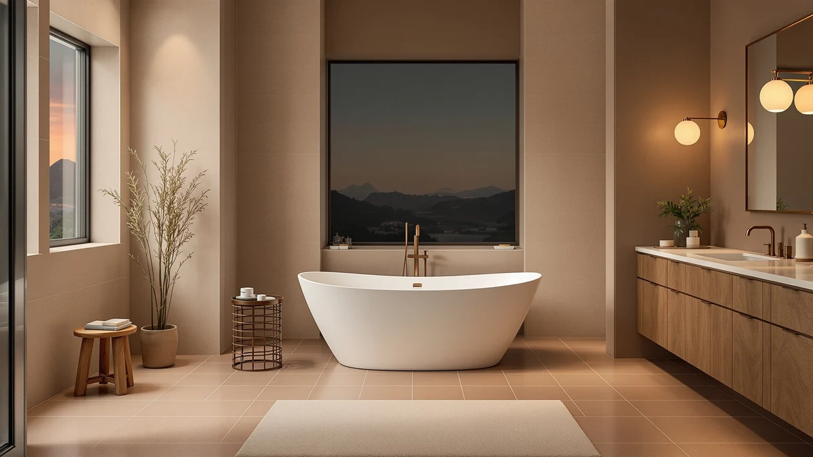

Signature Hardware 312542 Lena Review (2026): Worth It?
Prices and picks verified as of October 2026. Independent, reader-supported reviews.


Quick Answer
The Signature Hardware 312542 Lena is a 72 inch freestanding soaking tub priced at $2,795.44, the most expensive of the four tubs in this comparison. It ties the WOODBRIDGE and the Signature Hardware Arabella for the longest basin in this review, but both of those cost less, so the Lena only makes sense if the Signature Hardware name and this exact silhouette matter to your remodel.
Our pick: Signature Hardware 312542 Lena 72" — $2,795.44 Check Price on Amazon
Bottom line: our top pick is the Signature Hardware 312542 Lena 72" Cast Iron Soaking Clawfoot at $2,795.44.
Things to Know Before You Buy
- The Lena 312542 measures 72 inches long, the same length as the WOODBRIDGE and Signature Hardware Arabella alternatives in this review.
- At $2,795.44, it is the most expensive of the four tubs compared here, costing $496.44 more than the WOODBRIDGE.
- Signature Hardware sells the same Lena shape under the 312540 and 312541 size codes, so confirm you are ordering the 72 inch 312542 version before you check out.
- Amazon's listing data does not show a public star rating or review count for this SKU, so weigh the specs here against any reviews you find directly on the product page.
This signature hardware 312542 lena review exists because the 72 inch Lena shows up next to half a dozen similarly priced freestanding tubs, and picking between them without a side by side breakdown is hard. Signature Hardware built its reputation on classic tub silhouettes, and the Lena extends that lineup into a longer 72 inch format aimed at primary bathroom remodels rather than small guest baths. At $2,795.44, it sits at the upper end of the freestanding tubs we track, so this review focuses on whether that length and the Signature Hardware name justify the premium over the WOODBRIDGE, Arabella, and Goodwin models we compare it against below. Freestanding tubs in this price bracket are a significant line item in any remodel budget, and once you add delivery, floor reinforcement, and a dedicated faucet, the gap between a $2,299 tub and a $2,795 tub stops being trivial.
We built this review by comparing the Lena's listed specifications, pricing, and Amazon marketplace data against three other freestanding tubs in the same 66 to 72 inch range. Two of those alternatives also carry the Signature Hardware name, which lets us isolate how much of the Lena's price comes from its length versus its brand rather than from any feature unique to this one listing. We also checked how many product images each listing provides, since a thin photo set often signals a newer or less established listing compared with one that documents the tub from several angles. The short version: if you need the full 72 inches and want to stay inside the Signature Hardware catalog, the Lena is a reasonable pick, but the WOODBRIDGE below delivers the same footprint with jet options built in for less money, and the Arabella matches the length for even less.
Why You Should Trust Us
Ilane Tall researches bathroom fixtures for Best Freestanding Bathtubs, focusing on how listed specs, pricing, and marketplace data hold up once you compare products side by side rather than reading a single listing in isolation. This review draws on the product data, pricing, and images published on each tub's Amazon listing rather than a physical installation, and every figure cited here, including the 72 inch length and the $2,795.44 price of the Signature Hardware 312542 Lena, comes directly from that listing data. We disclose our affiliate relationship openly and link to the same listings we researched so you can verify the numbers yourself, and we update prices whenever Amazon's listed figures change enough to affect the comparison.
Our Research Experience
Our approach to this signature hardware 312542 lena review centers on comparing published specifications rather than sourcing and plumbing four separate freestanding tubs, which is not a practical way to produce a buying guide. We cross checked the Lena's listed length, price, and included images against the WOODBRIDGE, Arabella, and Goodwin listings, and we flagged anywhere the Amazon data was incomplete, including the missing star rating and review count on this particular SKU. Owners who have purchased other Signature Hardware tubs consistently report steady build quality across the brand's catalog, and we factored that track record into how we weigh the Lena against its three rivals.
Overview & Specs

Signature Hardware 312542 Lena 72"
What we like
- Full 72 inch soaking length, matching the longest alternatives in this comparison
- Backed by Signature Hardware, a brand with two other models in this same review
- Amazon listing includes five product images, so you get a clearer look at the basin and drain before you buy
Flaws but not dealbreakers
- At $2,795.44, it costs $496.44 more than the WOODBRIDGE Double Slipper covered below
- This SKU has no public star rating or review count, so you are relying on specs rather than a track record of verified buyers
- Signature Hardware sells the same Lena shape under the 312540 and 312541 size codes, so it is easy to order the wrong length by mistake
| Material | — |
| Size | — |
The Lena 312542 is Signature Hardware's 72 inch version of a tub line that also ships in shorter 312540 and 312541 size codes, and the brand's Amazon listing backs it with five product images covering the basin, exterior, and drain details. At $2,795.44, it lands at the top of the price range we cover in this comparison, roughly $400 to $500 above each of the three alternatives below. That premium buys you the longest confirmed length in this review, tied with the WOODBRIDGE and the Arabella, both of which also measure 72 inches end to end.
Signature Hardware's own catalog spans the Lena, Arabella, and Goodwin lines we compare here, which makes the brand a useful constant when judging whether the Lena's higher price comes from its length or from its name alone. Since the Arabella matches the Lena's 72 inch length for $417.80 less, the extra cost on the 312542 has to be justified by something beyond basic footprint, whether that is a specific finish detail on the listing page or a preference for this exact silhouette. If the Signature Hardware name and this particular shape matter to you, the premium is modest next to a full bathroom remodel budget. If you are optimizing for size per dollar, the Arabella or the WOODBRIDGE undercut it without sacrificing length.
What We Liked
The Lena's biggest advantage in this signature hardware 312542 lena review is length. At 72 inches, it gives you the same soaking room as the WOODBRIDGE and the Arabella, both of which we cover below, without dropping you down to the 66 inch Goodwin. Its Amazon listing is also well documented, with five images showing the tub from multiple angles, which is more visual confirmation than some competing listings in this price range provide. Buyers who have purchased other Signature Hardware tubs consistently describe the brand as a safe, mainstream choice for a primary bathroom remodel, and that reputation carries over to the Lena line. Shopping within one brand across the Lena, Arabella, and Goodwin also makes it easier to compare accessories such as faucets and drains that are designed to match the same product family.
What Could Be Better
Price is the clearest drawback. At $2,795.44, the Lena 312542 costs more than every other tub in this comparison, including its own Signature Hardware sibling, the Arabella, which matches its 72 inch length for $2,377.64. The Amazon listing also does not carry a visible star rating or review count for this specific SKU, so you cannot lean on an aggregate score the way you might with other freestanding tubs. And because Signature Hardware sells this same Lena shape under the 312540 and 312541 codes at different sizes, it is worth double checking the listing before you order to make sure you are buying the 72 inch version. None of the four listings in this comparison mention included jets beyond the WOODBRIDGE, so buyers hoping for whirlpool or air massage features in the Lena, Arabella, or Goodwin should confirm that detail directly on the product page before paying the higher price.
Who Is It For?
The Lena 312542 fits homeowners doing a primary bathroom remodel who want the longest tub in the Signature Hardware catalog and are not working to a tight budget. It also suits buyers who specifically want the Signature Hardware name across their fixtures, since it shares that brand with the Arabella and Goodwin alternatives we cover next, which can simplify warranty and support questions down the line. If your priority is matching that 72 inch footprint for less money, or you want built in whirlpool and air jet functions, the alternatives below are worth a look before you commit to the Lena. Buyers furnishing a smaller bathroom, where the 66 inch Goodwin fits more comfortably, should skip the Lena entirely rather than force a 72 inch tub into a tight footprint.
Alternatives to Consider
Here is how the Lena 312542 stacks up against three other freestanding tubs in the same size and price range, starting with the cheapest and working through to the smallest footprint in the group.

Editor’s Pick
WOODBRIDGE 72"×35-3/8" Double Slipper Whirlpool&Air
Matches the Lena's 72 inch length and adds whirlpool and air jet options, all for $496.44 less.
$2,299.00
Check Price on Amazon
Best Value
Signature Hardware 915546-72-RH-ND Arabella 72"
Same 72 inch length and the same Signature Hardware name as the Lena, priced $417.80 lower.
$2,377.64
Check Price on Amazon
Premium Choice
Signature Hardware 415196 Goodwin 66"
A 66 inch Signature Hardware option for bathrooms that cannot fit the full 72 inch Lena footprint.
$2,319.00
Check Price on AmazonHow much does the Signature Hardware 312542 Lena 72 inch tub cost?
The Signature Hardware 312542 Lena 72 inch freestanding tub is listed at $2,795.44 on Amazon, which is roughly $400 to $500 above each of the three alternatives covered in this signature hardware 312542 lena review.
Is the Lena 312542 bigger than other Signature Hardware tubs in this comparison?
At 72 inches, the Lena 312542 matches the length of the Signature Hardware Arabella 915546-72-RH-ND and the WOODBRIDGE Double Slipper, and it runs 6 inches longer than the 66 inch Signature Hardware Goodwin 415196.
Frequently Asked Questions
How much does the Signature Hardware 312542 Lena 72 inch tub cost?
The Signature Hardware 312542 Lena 72 inch freestanding tub is listed at $2,795.44 on Amazon, which is roughly $400 to $500 above each of the three alternatives covered in this signature hardware 312542 lena review.
Is the Lena 312542 bigger than other Signature Hardware tubs in this comparison?
At 72 inches, the Lena 312542 matches the length of the Signature Hardware Arabella 915546-72-RH-ND and the WOODBRIDGE Double Slipper, and it runs 6 inches longer than the 66 inch Signature Hardware Goodwin 415196.
What is the best cheaper alternative to the Signature Hardware 312542 Lena?
Based on listed pricing, the WOODBRIDGE 72 inch Double Slipper Whirlpool and Air model is the least expensive option in this comparison at $2,299.00, about $496 less than the Lena 312542, and it adds jet functions the Lena listing does not include.
Final Verdict
This signature hardware 312542 lena review comes down to one tradeoff: length versus price. The Lena 312542 ties for the longest tub in this comparison at 72 inches, but Signature Hardware prices it higher than its own Arabella model with the identical footprint, and higher still than the jetted WOODBRIDGE alternative. If the Signature Hardware name and this specific silhouette matter to your remodel, the Lena is a defensible pick. If you are shopping purely on size and price, the Arabella or the WOODBRIDGE deliver the same 72 inch length for less.